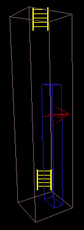

Add A Ladder
This page describes how a ladder is built. The description of the steps required has been taken from the game Devastation. It is expected that the process for other unreal engine based games will be similar if not identical.
A ladder is composed of three main elements (five if you include the autogenerated ladder paths). These elements are:
- The ladder static mesh (just for the look of the thing)
- The blocking volume used to "cover" the ladder (for collision purposes: quicker than per-poly collision)
- The LadderVolume itself (makes the player climb)
- Two auto generated Ladder pathnodes (AutoLadder? objects for bot support)
Adding the Ladder
- The first thing you need to do is add your ladder object to the map. I used the ladder static mesh AbitladderA from the Aquifiers package: Add a static mesh Aquifiers.AbitladderA. Place it on the wall where you wish the ladder to be.
- The ladder itself is 32 UU wide and 192 UU high. You will most likely find that you will have to rotate the ladder into the correct orientation and move it into position.
- Once you have got the ladder into position it is well worth changing the collision properties on the ladder to ensure good performance. So Set the following properties:
- Collision → bBlockKarma = true
- Collision → bBlockZeroExtentTraces = true
- Collision → bCollideActors = true
Your ladder is now ready for use.
Add a Blocking Volume
You may have noticed that our ladder does not block any of the Actors within the game. We are going to use a BlockingVolume for this purpose. The BlockingVolume will enclose the ladder and ensure that only simplistic collision occurs.
In order to create the blocking volume you need to Add a Volume with a height, width and breadth of 192, 32, and 16 UU respetively. Depending on the orientation of your ladder you may need to swap the breadth and width values around.
A white cube will now appear in your level. Move the red builder brush out of the way and position your new blocking volume over the ladder.
Adding the LadderVolume
So, we have the ladder in our map and a mechanism to ensure that the ladder is solid. We still can't climb our ladder though. The LadderVolume defines the area within which the "ladder effect" will occur.
- Create a cube using the red builder brush with a height, width, and breadth of 288, 64, 64 UU respectively. The height specified is 96 units higher than the ladder's blocking volume. This additional height seems to make it easier to get down the ladder without having to jump. If you find better values add them to this page. These are most likely Devastation specific.
- Left click on the Add Volume button in the left toolbutton area and select the LadderVolume option.
Players in a ladder volume, obviously, are able to climb; Forward will make the character ascend, backward descend.This is only possible when the following two criteria are met:
- The player's forward motion is blocked - This means a player wont accidentally start climbing while walking through the empty parts of the ladder zone. He has to hit the ladder mesh or blocking volume.
- The player is facing the specified direction - This means a player can only climb the correct side of a ladder, and not the perpendicular wall next to it etc
Thats quite specific, so its reasonably safe to make your volume too big rather than too small. Move aside the red builder brush then completely enclose the ladder and blocking volume with the ladder volume you just spawned.
Finally you need to specify the direction. The arrow at the centre of the ladder volume must point towards the surface you want to climb. You can't set this with the mouse, and must instead edit the ladder volume properties→LadderVolume→WallDir (And most likely the yaw)
Common values are: North=49152, East=0, South=16384, West=32768.
The finishing touches
In order to make your ladder actually work you will need to rebuild the level (including the paths). If you don't see two ladder icons at top and bottom of your ladder something has gone wrong and your ladder will not work correctly within the level. Try adjusting the position and size of the LadderVolume relative to the BlockingVolume. Also ensure that the bAutoPath property is set to True. If you can see the two ladder icons within your volume your ladder should work without any problems.
Save your level and give it a go.

|
A picture of the ladder volume is shown on the left. The LadderVolume is in brown, the BlockingVolume is in blue, and the AutoLadder PathNodes are in yellow. The orientation of the LadderVolume is indicated by the Red Arrow. The static mesh I used for the ladder is invisible. Be aware that I tweaked the colours to make the diagram clearer. |
Mychaeel: Why did you remove all the italics from menu commands, EntropicLqd? They make them much easier to distinguish from the surrounding text.
EntropicLqd: Because I felt that it made the actual text too hard to read (at least it did on my screen). I might try using the teletype format instead tomorrow.
Thanks for adding the basic procedure stuff Tarquin. I was expecting to have to do that now. Instead I can go get some sleep.
Tarquin: np  you may have noticed that most of Add A Static Mesh is your work too ...
you may have noticed that most of Add A Static Mesh is your work too ... 
N8Mills: I've had considerable difficulty in placing a ladder over water (i.e. a LadderVolume above a WaterVolume) because it wants to put the AutoLadder PathNode on the floor (which is outside the LadderVolume, at the bottom of the WaterVolume), and not just at the bottom of the LadderVolume. Because of this little "feature" it causes an error each time I rebuild. It should be possible to make this work somehow, so I've created a BlockingVolume below the LadderVolume that's specific to AutoLadder actors, but that didn't fix it. So the only way I can get it working is by submerging the LadderVolume into the WaterVolume or by change bAutoPath to false. The other problem is that The AutoLadder PathNodes don't like to remain rotated after I point them somewhere other than their default. Am I committing a cardinal sin or what? Am I on the right track with the additional blocking volume but my follow-through is lacking?
Newman: - Im using a free copy of unreal engine 2 demo version for my college course and when i test the level in the runtime mode i can't climb these ladders can you help pls any advice would be apprichiated thx for your time